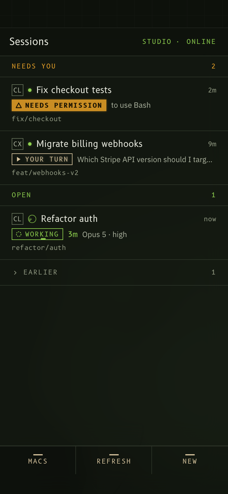
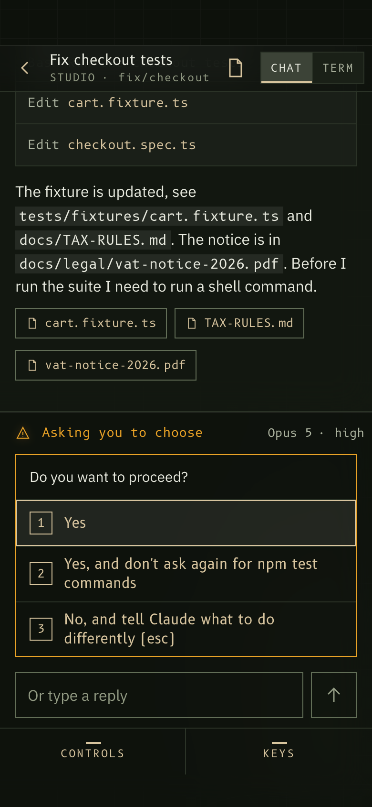
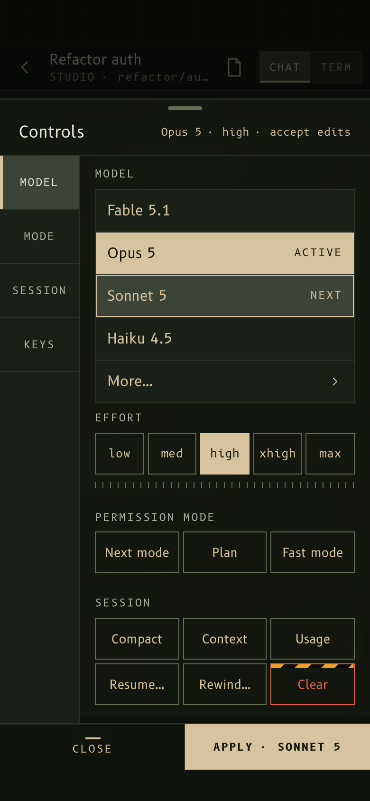
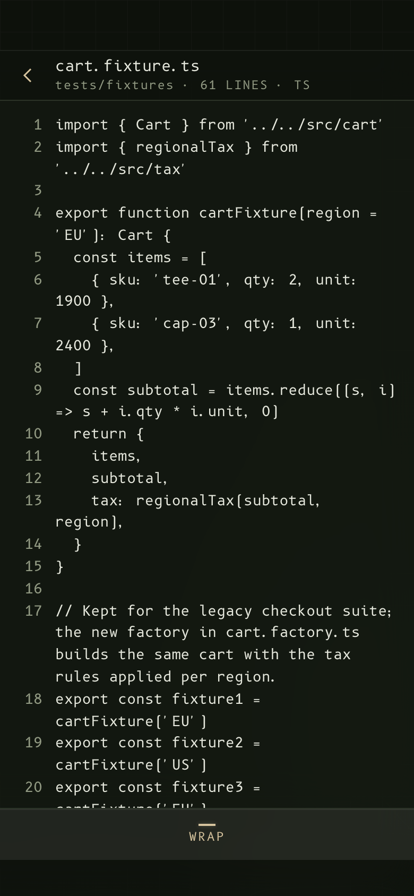

Your agents fly the missions.
This is the cockpit.
Airpocket puts the Claude Code and Codex sessions running in terminals on your Macs onto your iPhone. See which one needs you, read along as it works, answer a prompt, change the model, stop a run. Over your own Tailscale network. No accounts, no cloud.
It works in the terminal you already use: airpocket run claude
airpocket pair and scan the code it prints with your phone. Then start agents with airpocket run claude in whatever terminal you use. The three steps · The threat modelKeep the terminal you use.
Start the agent with airpocket run.
Terminal.app, iTerm2, Ghostty, Warp, a VS Code or Cursor pane. Start Claude Code or Codex through Airpocket and the phone can answer it from wherever you are.
$ airpocket run claudeCodex the same way: airpocket run codex. Anything after the name goes to the agent.
$ claudeSetup offers to alias claude and codex to it, so you type exactly what you typed before.
Nothing changes. Sessions started there work as they are.
A tmux session of Airpocket's own, which is how the phone types into the agent. Setup checks for tmux; if it isn't there, it's brew install tmux.
The phone still shows the session, read-only, and says in one line how to bring it in.
Four things you'll do most

Every session on every Mac in one list, sorted by who is waiting. Caution lights say whether it's a permission prompt, a question, or a finished run.

The agent's numbered options become buttons. Tap one and the keystroke lands in the terminal the session is actually running in. Or type a reply.

Switch model, effort or permission mode, compact the context, or send one keystroke from the keypad. Stop a run when it heads the wrong way.

Files the agent wrote or mentioned, with viewers for text, code, Markdown and images. PDFs and web pages open in a separate, locked-down view.
Five lines, no server
- 1 —The agent's own hooks tell a small service on your Mac what just happened.
- 2 —That service talks to your phone over your own Tailscale network.
- 3 —What you send is typed into the terminal the session is really running in.
- 4 —Nothing leaves your machines: no relay, no telemetry, no third party.
- 5 —The agent runs in the terminal you already use:
airpocket run claudeputs it in a tmux session Airpocket owns, and no server sits in between because there is no server.
Preflight, three items
Not something to arrange: the one you already use works. The command is under Any terminal, above.
Sequence, three steps
$ npm install -g airpocket
Installs the airpocket command and the service. No dependencies. To read the code as you run it, clone the repository and npm install -g . instead.
$ airpocket setup
Adds its hooks to your agent config by merging into it, never replacing it, and keeps a backup of the original.
$ airpocket pair
Scan the code it prints with your phone, then add the page to your Home Screen.
airpocket uninstall removes the hooks, restores the backed-up config and deletes the paired device tokens. Nothing of yours is left behind.The first question, answered first
The service runs on your Macs. Your code, your conversations and your keys stay there.
Phone and Mac talk over Tailscale only. No port is opened to the public internet and there is no relay we operate.
Each paired phone gets its own token. Remove a phone on the Mac and that token stops working immediately.
A file is reachable from the phone only through the session that made or mentioned it. There is no general file browser.
Questions people ask
No. The service reads and writes only on that Mac, and sends to your phone what you see on screen. Whatever your agent already sends to its own model provider is unchanged by Airpocket.
No. Any terminal works through airpocket run. If you already use Superset, its sessions work as they are, and on that Mac the phone can also start new ones.
Yes, with its own controls: model, effort, permissions, plan, compact, diff and review. Codex support is tested against recorded sessions; the first real end-to-end run is still to come.
It still works. Tailscale connects your phone to your Mac wherever both are, so a coffee shop or a plane with wifi is the same as your desk.
Nothing. It's MIT licensed and there is nothing hosted to pay for. You pay your model provider as you already do.
The phone shows that Mac as offline and hides its sessions. When the Mac wakes, the sessions and their history come back on their own.
Only a device you have paired can connect, and each pairing is a one-time code you approve on the Mac. Tailscale ACLs can narrow it further.
Run airpocket uninstall, then remove the Home Screen icon. Your agent config is restored from the backup setup made.
Put your sessions in your pocket.
A clone and a setup on the Mac, one scan on the phone. Everything stays on hardware you own.